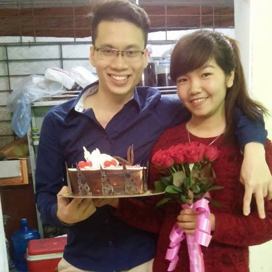

Đúng là lấy vợ đã lấy của tôi tất cả mọi thứ... kể cả chủ nhật. Ngày xưa hồi đi học hay đi làm, mọi thứ đều là
của tôi, tôi có thứ hai đến thứ năm để ăn rồi chơi, ba thứ còn lại để chơi rồi ăn. Ấy thế sau khi lấy vợ thì cả đến ngày
chủ nhật của tôi cũng là của vợ con tất, buồn buồn là...
Tôi chính thức chui vào rọ ngày 15/9/2018, nói là chính thức vì tôi được tuyên án treo từ năm 2014. Qua một mùa hè lên tham gia
tiếp sức mùa thi cũng vì mục đích kiếm cho mình em người yêu để biết cái cảm giác có người yêu nó như nào. Thú thực là từ bé
đến lớn với vẻ ngoài đẹp trai bẩm sinh thì tôi chưa có mối tình nào vắt vai. Nên lên đại học tôi quyết chí tham gia một clb
nào đó để quen được một em. Hồi đó tôi cứ tưởng thế là hay....
Em tên Vân, kém tôi hai tuổi học năm nhất và cũng ở cùng câu lạc bộ tình nguyện với tôi. Mới năm nhất, chân ướt chân ráo
lên Hà Nội đã chăn được hot boy đẹp trai nhất vịnh bắc bộ rồi, bọn trẻ giờ giỏi thật.
Công cuộc tán em diễn ra trong 3 tháng. Hồi đó cậy mình đẹp trai nên tôi hay đi trêu các em gái, tôi cứ tia em nào cười tươi nhất thì tôi tán luôn.
Thế là tôi tia được em Vân, lúc ấy tôi vẫn đạp con Asama lọc cọc , ấy vậy mà đèo chả bao giờ thấy mệt, có lần còn đèo nhau quanh Hà nội phải đến
hai ba chục cây, chả bù cho bây giờ đèo xe máy ra đường ăn bát phở thôi mà về nhà tôi cũng thở dốc. Đèo đi đèo về suốt mấy tuần tiếp sức, ngày nào rôm rả suốt
quãng đường đi, tôi phải lòng em thật lúc nào chả hay.
Kì tiếp sức kết thúc, tôi với em ai về quê người nấy. Bấy giờ mới bắt đầu giai đoạn hót qua tin nhắn của tôi. Tôi chém từ
worldcup đến nhà trọ , cơm nước, bếp núc như nào như kiểu hai chị em tâm sự ... Cũng may quá trình tán qua điện thoại
chỉ có một tháng, tôi với em trở lại trường chứ không chỉ cần thêm một tháng nữa thôi, thì con tôi giờ vẫn chưa có mẹ.
Sau một vài lần hẹn hò, cảm thấy nếu tán tiếp thì em sẽ rủ tôi kết nghĩa huynh đệ nên đến đêm ngày 8/9 , sau trận
nhậu say sưa với mấy thằng bạn đại học tiện thể tôi "mượn rượu tỏ tình" với em luôn, quyết tâm là thế, ấy vậy đến lúc quan trọng nhất tôi chả dám nhấn gửi tin nhắn để
tỏ tình với em . Tôi đưa máy cho thằng bạn tôi cũng đang say quắc cần câu bên cạnh nhờ duyệt văn rồi ấn gửi hộ cho. Tôi bảo nó : "tôi đang nhắn tin chốt với em Vân thì tự nhiên
đau tay quá, ông ấn gửi hộ tôi cái" Thằng bạn tôi nhắn cái roẹt xong vứt máy cho tôi rồi ngủ tiếp bỏ mặc tôi trong sự bàng hoàng, không cả kịp cho tôi soát lại xem đã viết đúng
tên Vân chưa?
Tôi tỉnh cả rượu, hồi hộp đợi tin nhắn từ em , "Em đồng ý, có gì đâu mà anh nhắn lâu thế" .. Nhưng đấy là
tôi tưởng tượng ra thế , chứ tin nhắn của em không thế. Em rep tin nhắn của tôi, cầm điện thoại mà tim thôi đập thình thịch.
Tôi nghĩ lần đầu mà thất bại thế này thì đúng là ý ô trời muốn tôi "hoa thơm mỗi em ngửi một ít" rồi .
Em trả lời tôi là cần thời gian suy nghĩ thêm , chứ chưa đồng ý ngay. Tôi tiu nghỉu, thế là thật rồi ... "hoa thơm mỗi em ngửi một ít" ,
rồi tôi thiếp đi lúc nào chả biết .
Hôm sau tôi rủ em đi dạo để hỏi xem em nhắn tin hôm qua hay bạn cùng phòng em troll em. Đấy, bảo suy nghĩ gì mà trai rủ đi đâu là đi theo đấy
có lạ không cơ chứ. Tôi với em đi dạo quanh hồ Văn Quán đến chóng cả mặt thì ngồi xuống để nghỉ ngơi, vừa mệt vừa
sốt ruột, không chịu được nữa, Tôi nói:
- Ý em sao? Có đồng ý hay không hay anh ném xuống hồ đây này?
Em không nói gì mà từ từ đứng lên đi thẳng ra hồ, tôi hốt hoảng đuổi theo :
- "Ấy ấy, anh đùa thôi mà, chưa cần nhảy ngay đâu, đợi anh về đã"
Đùa vậy chứ, em chỉ ngồi yên nhẹ nhàng trả lời tôi : "Sau thời gian suy nghĩ, bàn bạc bạn cùng phòng em, thì nó cũng khuyên là nên thử yêu anh
xem sao nên là ... Em đồng ý". Ơ, cái đạp con mèo, em nó đồng ý mà như kiểu liều mạng đi vào chỗ chết vậy, mà tôi cũng chỉ là hàng dùng thử thôi á...
Nhưng chả hiểu sao lúc đó tôi lại hoan hỷ chào đón cái sự liều mạng của em ấy thế chứ. Và 8/9/2014, tôi chính thức có người yêu.
Chúng tôi yêu đương trong sáng như bao cặp đôi bình thường khác. Năm năm yêu đương cuối cùng kết thức một cái đám cưới ngày 15/9/2018 và một thằng ku tên Ken.
Cãi nhau như chó với mèo ấy thế mà tôi với em chả chia tay lần nào, cứ mỗi cãi nhau to là em chủ động tắt máy, khóa facebook
không cho tôi gọi điện hay nhắn tin, làm tôi không có cách nào đòi quà được nên là tôi lại phải chủ động làm lành....haizzz.
Khoảng thời gian xa em lâu nhất là lúc em về quê tôi để chuẩn bị sinh Ken, còn tôi vẫn phải ở lại Hà nội đi làm, xa em rồi
tôi mới nhận ra rằng dù bình thường tôi hay trách em nũng nịu, lười ăn như con mèo, nhưng vì con , vì tôi mà đã cố gắng rất nhiều.
Hồi bầu, nhìn em vật vã hàng ngày để cố chén hết con chim bồ câu, rồi mỗi ngày uống một vốc thuốc bổ trong tay.
Đến khi gần sinh, em còn đồng ý theo tôi về Nam Định, để thuận tiện hơn cho tôi, không muốn tôi suy nghĩ nhiều,
rồi đến khi sinh, tôi mới thấy em mạnh mẽ cỡ nào. Bấy giờ tôi mới nhận ra bấy lâu năm người nhường nhịn thật ra không phải là tôi...
Hồi phải ở trên HN một mình, thiếu hơi vợ hay sao mà tôi rất hay mơ, không phải mơ lô mơ đề mà tôi toàn mơ những thứ ức đến phát
khóc. Các cụ bảo ngày nghĩ nhiều cái gì thì đêm mơ cái đó, cấm có sai.
Ví dụ như tôi rất ảm ảnh việc thay bỉm shit cho con y như rằng lần đầu tiên, tôi mơ phải dọn shit cho con, mà dọn xong xuôi,
bỉm biếc tinh tươm rồi mà tôi vẫn ngửi thấy mùi thúi của shit. Tưởng bị dính chưởng vào tay chân, quần áo thế là tôi đi tắm, tắm gội sạch sẽ vẫn thấy mùi shit, tôi lại đi
tắm lại, tắm mãi tắm mãi vẫn thấy mùi shit , vừa bước ra khỏi nhà tắm vẫn thấy mùi shit thoang thoảng xung quanh tôi ,
thế là tôi bực, định kệ mà đi đến đâu mọi người bịt mũi đến đấy tôi lại chạy về nhà để tắm lại , tắm mãi mà vẫn không hết mùi ,
thế là tôi ức, ức đến phát khóc, vừa tắm vừa khóc.... đến đây thì tôi choàng tỉnh dậy, hít hà xung quanh tôi mới biết đó là mơ. Hú vía....!
Lần thứ hai tôi mơ vợ tôi nhớ quên ngoại nên đòi về quê, tất nhiên là tôi không về được vì vẫn còn cữ mà vợ tôi cứ đòi đòi, không đòi được thì
cứ khóc, khóc lấy khóc để , thằng Ken thấy mẹ khóc cũng hùa khóc theo, khóc mà nước mắt ướt cả ra nhà, tôi thì sợ
hàng xóm mọi người tưởng tôi đánh vợ đánh con nên sợ, vừa bế thằng Ken dỗ cho con nín vừa phải dỗ cả mẹ nó. Nhưng càng dỗ
thì hai mẹ con nó lại càng gào to hơn. tôi biết làm gì lúc ấy ngoài òa khóc theo luôn cho vui...thế là tôi khóc trong mơ
lần hai.
Rồi có lần tôi mơ vợ tôi lại đi đẻ , "ơ, vừa đẻ xong thằng Ken mà xong lại đẻ tiếp à? " - tôi nghĩ. Đang hoang mang thì
bác sĩ ra nói với tôi rằng do em đẻ mau quá nên CÓ VẤN ĐỀ nên giờ vẫn chưa tỉnh lại phải cấp cứu gấp, tôi hoảng hốt chạy lại
nhìn vợ tôi nhưng tôi không được đến gần, bác sĩ không cho tôi vào phòng cấp cứu, nhìn vợ tôi nằm im lìm, bốn năm bác sĩ, y tá vây quanh,
Tôi cố hết sức lấy tay đập vào tấm tường kính trong suốt của phòng cấp cứu để gọi em tỉnh lại, mặc kệ cho mọi người ngăn tôi lại.
em vẫn nằm yên không nghe thấy tôi, tôi lo có việc gì xảy ra với em, sợ mà khóc như chưa bao giờ được khóc, vừa khóc vừa đập...
Tôi choàng tỉnh lại, nước mắt ướt đẫm cả mặt, cả gối của tôi, hóa ra tôi khóc thật chứ không phải chỉ khóc trong mơ...
Thế đấy, bình thường tôi rất ít khi thể hiện tình cảm với vợ, tôi không hay tặng quà vào các dịp cho em. Tôi cũng không hay
nói "anh yêu em" như các cặp đôi khác. Rồi cuộc sống lo toan bộn bề, khiến tôi cũng không còn lãng mạn như xưa, tôi tưởng
rằng giờ bao nhiêu tình cảm của tôi đã dành hết cho thanh niên Ken, nhưng không, TÌNH YÊU của tôi dành cho em vẫn thế,
nó không ít hơn so với sáu năm về trước, mà nó giờ nó đã trưởng thành hơn và đặc biệt hơn rất nhiều đó là GIA ĐÌNH,
và nó gần như TÌNH RUỘT THỊT vậy, vợ tôi đã trở thành một phần trong gia đình tôi, một phần không thể thiếu trong
sâu thẳm tâm hồn tôi.
Anh em ạ, rồi cũng đến lúc những trận nhậu thâu đêm suốt sáng để bàn về chiến tranh thế giới tiếp theo sẽ nhạt dần,
rồi cũng đến lúc thắng thua trong game cũng nhẹ tựa lông hồng thay vì đập bàn đập ghế, gân guốc , sát khí hừng hực như
ngày xưa. Anh em phải đi làm, phải chịu đựng những thằng sếp khốn nạn... Lúc đó GIA ĐÌNH sẽ là nơi để anh em tìm lại hương vị của cuộc sống, là lí do để chúng ta phải vững vàng sống để bảo vệ
và được bảo vệ...
P/S: Chúc em sinh nhật vui vẻ. Cảm ơn em đã dành thanh xuân của em cho tôi. Mặc dù cho hay không thì thanh xuân của em
theo thời gian cũng .... :))
Aye,
-T.A-
